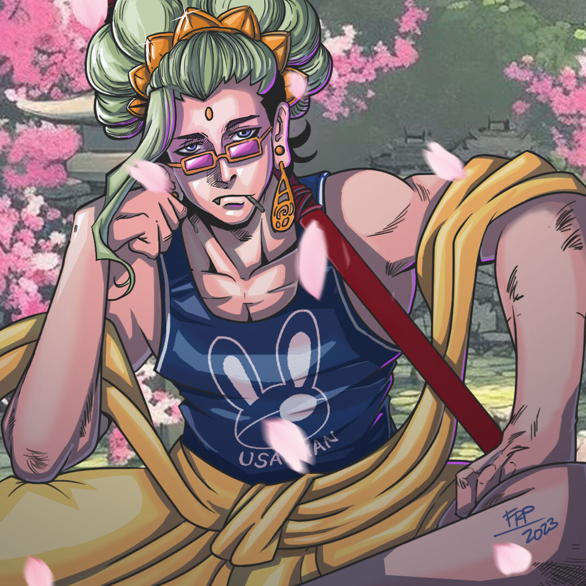

Gautama Siddhartha, known as Buddha, inspired In the anime record of Ragnarok, Buddha is known the coolheaded character in the show. Buddha was originally a Human by the name of Gautama Siddhartha (ゴータマ・シッダールタ, Gōtama Shiddāruta), a prince who lived in the lap of luxury and whom the gods foretold would one day rule the whole world. He never questioned his life path until his close friend Jataka, a royal of a neighboring country, fell ill. Jataka was considered a great ruler who brought prosperity to his people and everyone around him, including Siddhartha, believed that he must've been the happiest man alive because of it. However, Jataka revealed to Siddhartha that he had many dreams left unfulfilled and that he felt his life hadn't been his own. After Jataka's death, Siddhartha could still only hear people talk about how happy he must've been. This was when Siddhartha gained a revelation about the true nature of happiness. After that, Siddhartha abandoned his old life, leaving behind his family, possessions, and claim to the throne. He left to follow his own path and live as a wanderer. He would later gain countless followers who would come to know him as Buddha, the Enlightened One. By attaining enlightenment, Buddha eventually ascended to Godhood. Buddha is a famous philosophical figure hailing from Nepal, a prominent deity in the Dharmic Pantheon, being the founder of Buddhism, one of the Four Sages, as well as one of the few divine beings, alongside Heracles and the Valkyries, who are not in favor of destroying Humanity.